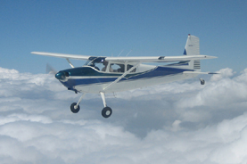
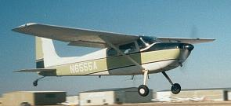
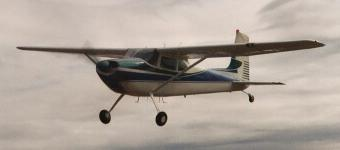

|

|

|

|
|
Taken by John Scott during return from Oshkosh 2007.
Gil's Thorp was the camera ship.
|
Taken as the airplane was brought to 00V (now
KFLY)
for the first time.
Mom & Dad painted it
this way in 1965.
Kinda faded by this time, April 2003.
|
Linda took this shortly after the new paint.
Gene Kear did the work.
|
N6555A
A little history on this airplane ...
- 1956: N6555A is a 1956 Cessna 180
manufactured in 1956 (#32452), we believe in March, just months after me.
(The test pilot failed to date the test flight in the log.)
- 1960: A kindly old retired airline
pilot purchased N6555A from the factory,
and he and his impressively short wife flew it for four years.
Citing concerns about continued proficiency with the airplane, the
couple decided to sell the airplane and get a
Comanche.
My father's mechanic, Cable Airport's (Claremont, CA) George Veith,
became aware that N6555A was on the market.
My parents bought the airplane ... and it has been in our family, indeed,
become part of our family, ever since.
My mom even learned to fly power in it!
- The airplane has been based at
Cable (1956-1963),
at Van Nuys ('63-'67 - anyone remember the old Angels Aviation hangar on the cross runway near Volpar?),
Rose
Valley (now Potomac Airpark,
one of the
"DC-3",
in '67-'68),
Manassas ('68-'80?),
Shannon ('80?-'92),
and more recently at
St. Mary's County
('92-'03) near
Patuxent River NAS in
Southern Maryland.
Cable (CCB) is the World's
largest family-owned, public-use airport.
- 2002: In this year,
Dad
found it was necessary to stop flying after 50
years of participation in general aviation and an illustrious career
in private industry and as part of that not always large cadre of
FAA employees that actually try to help the aviation community.
- 2003: So Mom and
Dad
have kindly allowed
me to have and fly the airplane.
It is now based at Meadow
Lake Airport NE of Colorado Springs CO.
Since it is a family member, I of course attempt to treat it with the
same care as he.
- 2006: We are nearing the end of an engine
change.
Late in 2004, the old trusty "-K" started making metal at 1950 hours.
Obviously it owed us nothing - time for a change.
With three in college, we opted for a temporary solution: I found an
"-R" (Continental O470-R) motor remanufactured in 2001 that was
already at TBO (1500 hours).
It was flying in a 182 doing Part 135 Canyon tours out of Prescott.
Craig Kloppenburg and I (mostly Craig!) have been making lots of
little improvements and changing out the engine.
We're having a little trouble here at the end getting one of our
paperwork evolutions done, but it's almost complete, and the airplane
is ready to fly.
Looking forward to having it in the air again.
- 2007: Done!
The airplane is flying.
We planned and executed three great trips in 2007.
One was to Oshkosh with John Scott and Gil Gildersleeve, see picture above.
Also, professional photographer Bruce Leibowitz shot me preparing to
depart Oshkosh rwy 18 on Sunday afternoon, and posted
his
photo on airliners.net.
Earlier, in May, we flew to Southern California to see my daughter
graduate from Scripps College.
Finally, late in the year we flew back east to a number of vacation
stops, including locations in MO, MD, PA and OH.
First flight was actually on the 10th of December 2006. Flew great.
The FAA finally approved the combination of -1 mount, -R engine,
and -K exhaust system.
Without the approval, I would have been in for significant changes,
including appearance, as a differenct exhaust would have required a
different cowling.
Now, of course, I can use any -R engine without needing another
approval, and they are much easier to find than -Ks.
Thanks of course to Craig Kloppenburg for all his work getting my
180 back in the air.
But thanks also go to David McRae and the FAA guys who worked with us
to finalize the paperwork.
- 2009: Back to Oshkosh again, this time with
Mike Davis and (at the time) fellow 180 owner and friend Bill Murrish,
who bought Ben Kelly's '53 180.
Bill and I had great fun stooging around the state that year.
If you look carefully around my website you'll find some of his
photos. The air-to-air stuff was really fun.
- 2010: Attended my first
Skywagon convention.
LOTS of Skywagons.
Linda and I had a great time.
- 2011: I attended the
Antique Airplane
Association member fly-in in Blakesburg, Iowa.
My oh my that was a wonderful fly-in.
Took Mike Davis along.
Must go again to this one.
- 2013: Got to the western Skywagon
fly-in at Laughlin/Bullhead City.
Took Joe Brundage along.
Must go back to this one too.
Had a blast going to some out of the way backwater dirt strips
in eastern California.
- 2014: Got to another western Skywagon
fly-in, this one in Monument Valley/Gouldings Lodge, brought along
Danny Oldfield.
Did some air-to-air with Tom Koff and Lisa Fabian, we got some rocking
photographs we'll have to post here eventually.
Pat Feenstra and his all-woman fly-in crew did a super job once again.
In July I took the 180 back to Oshkosh with Joe Brundage.
Amazingly, Joe had never been to Oshkosh!
We were parked well south of the 36 numbers which changed our day quite
a bit, but no one could prevent us from having a great time.
In late August, I took John Poss to the Antique fly-in.
It rained heavily most of the time so we didn't get much flying in, but
again, lots of wonderful people and had a super time.
So this was a banner year for N6555A.
And it's not over! We're about to start the upholstery job, Finally!
More to come on that.
- 2015: Late
last year we took advantage of my Mother's generosity and installed
a completely new interior, except for the top of the instrument panel
(glare shield) which was in good shape.k
Kim and Mike Hughes from Parkland in Erie Colorado performed the work.
They did a great job.
I'll have to post pictures!
So, you're asking whether it's really true that this airplane has been in
the family since 1960?
I gotcha covered.
Here (below) are two pictures of the airplane before it was painted in 1965;
that is, this is the original factory paint job.
On the left, I believe this unfortunately blurry photo was taken at
PHL/Philadelphia.
Note the C-47 with the turbine conversion in the background - not too many
of those aircraft had been converted when this picture was taken.
Note the fading already in progress, and the red horizontal strip on the
rudder.
We flew back east in summer 1961 to visit my Aunt, who had a 1956 Bonanza
(N4478D) she kept in a hangar at PHL, that's where I think this photo occurred.
(I looked at the old log, the 180 logged 41 hours on that trip back east.)
On the right, that's me and my parents at
Monachee Meadow
airstrip (click on the link, then search for "August 1943 Mt. Whitney",
and scroll down half a page) in the High Sierras.
The log says late May 1960 so I was not yet 5 years old.
I distinctly remember this weekend; it may be my first real cogent memory.
My parents were rock stars!
Interesting strip, it was about 1800 feet long with a mountain at one end.
According to the Freeman abandoned airfields site, Ted Sarbin said that
the Tunnel Meadows airport was closed when the Wilderness areas was
established; Monachee probably closed at the same time.
According to a whitneyzone.com forum entry, the airport nonetheless was in
good condition still in 2011.
Here is a
BackCountryPilot forum entry
with more detail.
It appears that there were actually two strips at Monachee.
From the description, it is East Camp, the one remaining in reasonable
condition, that we flew into way back when.
Anyway, these two pictures below are nearly 1MB in size apiece.
These are actually from a couple slides
Dad
found for me when we got to thinking about painting the airplane
using the original paint pattern.
Mom sent me these two photos, I believe taken by Lou or Judy Divone
from the cockpit of Old Charlie, of Mom and
Dad
in formation with
them somewhere over the Commonwealth of Virginia.
So that's the paint job "in the middle" while it still was in
pretty good shape (though the photos are pretty old - before the
Cleveland brakes so pre 1978, those are the speed covers over the
original Goodyear brakes.)
More Pictures
- Here is a set of photographs
take by my wife Linda during our first arrival at Meadow Lake
following our cross-country from Maryland, and during the trip itself.
- Here is a set of photos
of 55A following its brand new paint job! October 2003.
- More 55A photos, some at
a fly-in at the Runaway Inn and a few others including a fly-by and some
photos at Phoenix.
- 55A's owner manual, a little
history
We hope you have enjoyed the extremely short tour.
Other interesting 180 links:
Webmaster


{kind=link}
{kind=link}
{kind=link}
{kind=link}